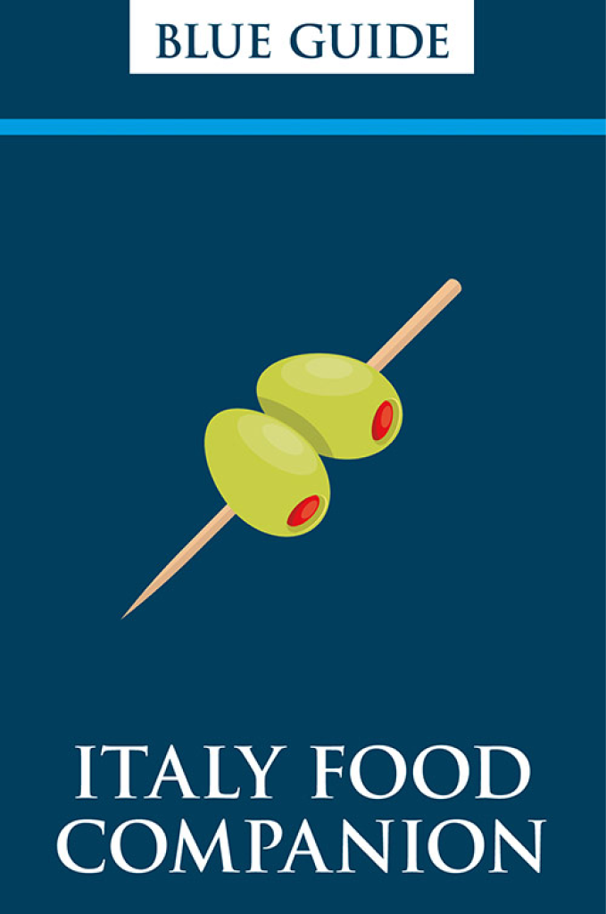

The Blue Guides are the oldest English-language guide book series, with an unmatched depth of information, particularly on Italy and the Classical world. blueguides.com.
Italian Food is your companion app to all the food items you might find on menus in Italy. Get full access to around 500 of the most common terms for free, or upgrade to Pro for our complete dictionary of over 2000 food items. If you haven't already, you can upgrade at the tab below.